The concept is inspired by the process of cell division, a core mechanism through which living organisms grow. This serves as an analogy for how a tenant within RLAM can begin at a small scale and progressively expand over time. The design reflects structured, organic growth, aligning with RLAM’s commitment to supporting long-term development and scalable potential.
RLAM Life Sciences
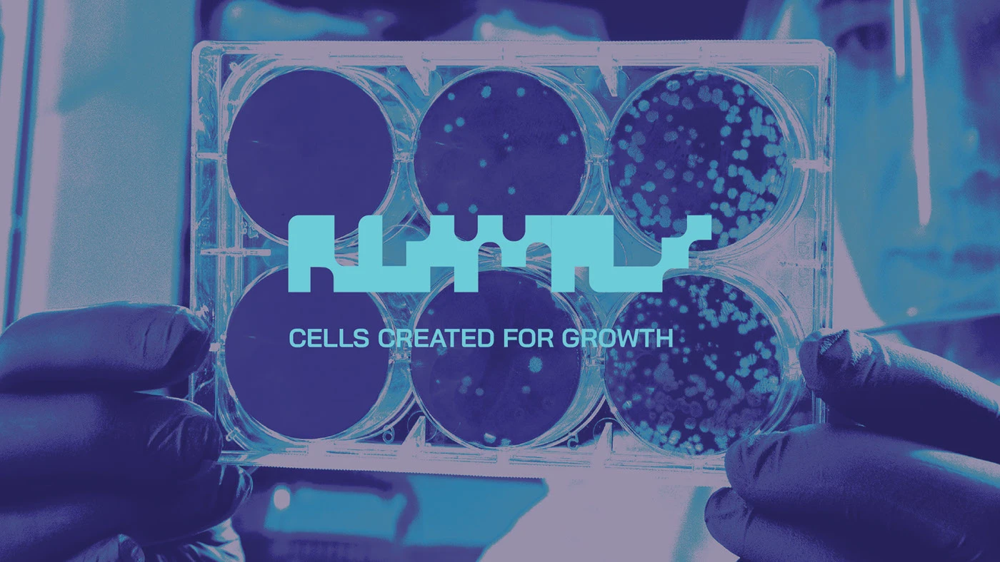
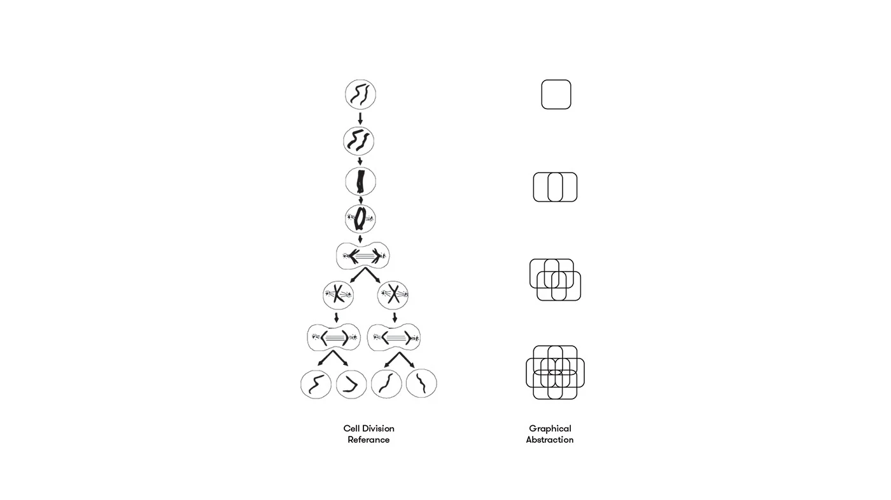
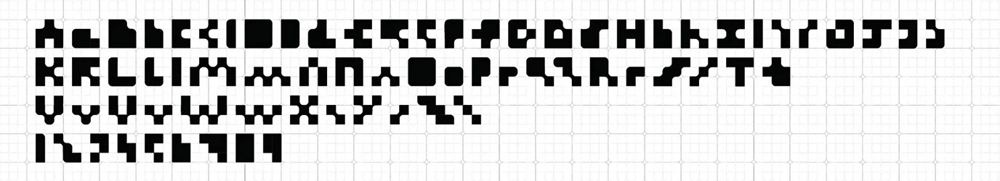
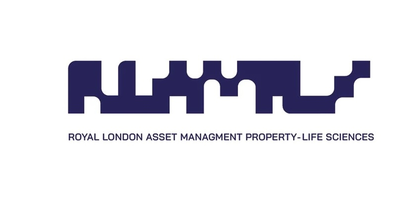
Abi Jamjuree Regular
Font pairings use Bai Jamjuree alongside a custom mark built from the cell division abstraction, giving the identity a precise but expandable system across print, signage and digital surfaces.
Font parings usd BAI Jamaree paired with a custom font based on the graphical abstraction created above.
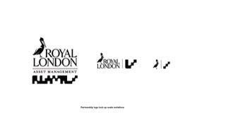
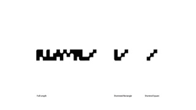


Font pairings and reduced symbols were tested in parallel so the custom forms could hold up from full lockups down to the smallest navigation marks.
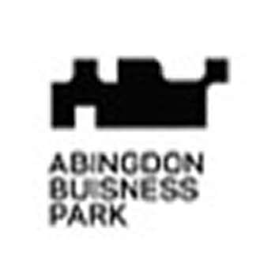
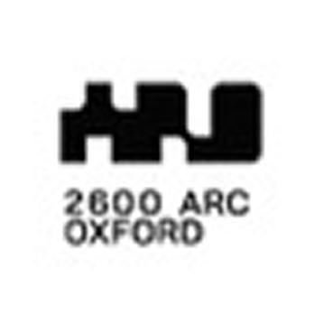
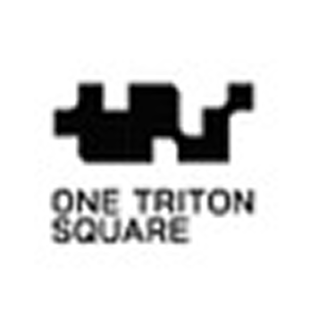
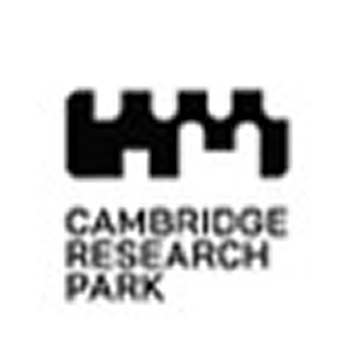
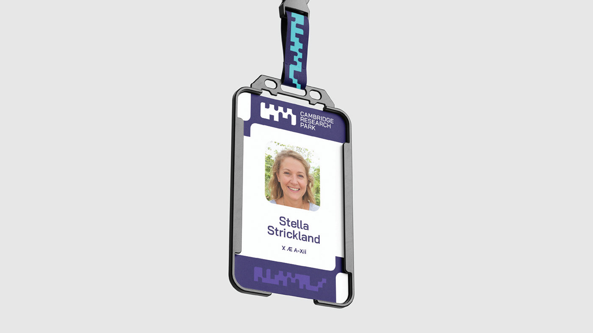
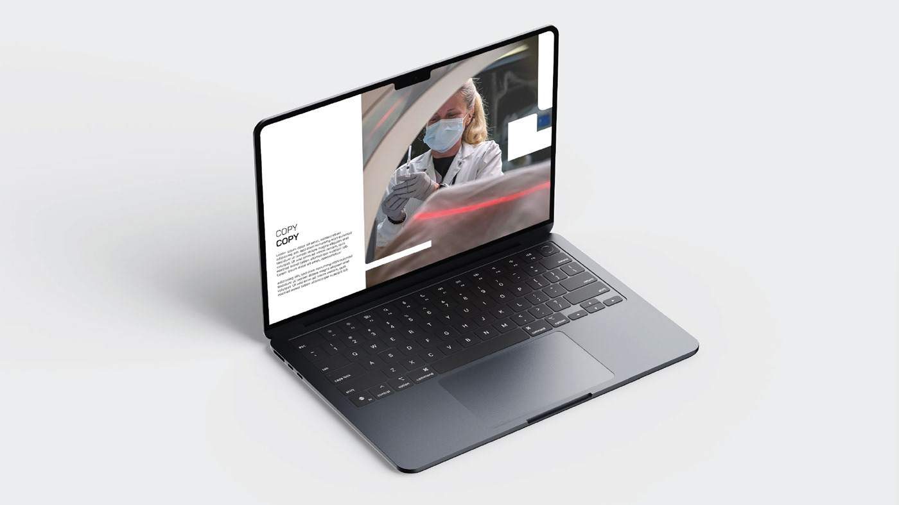
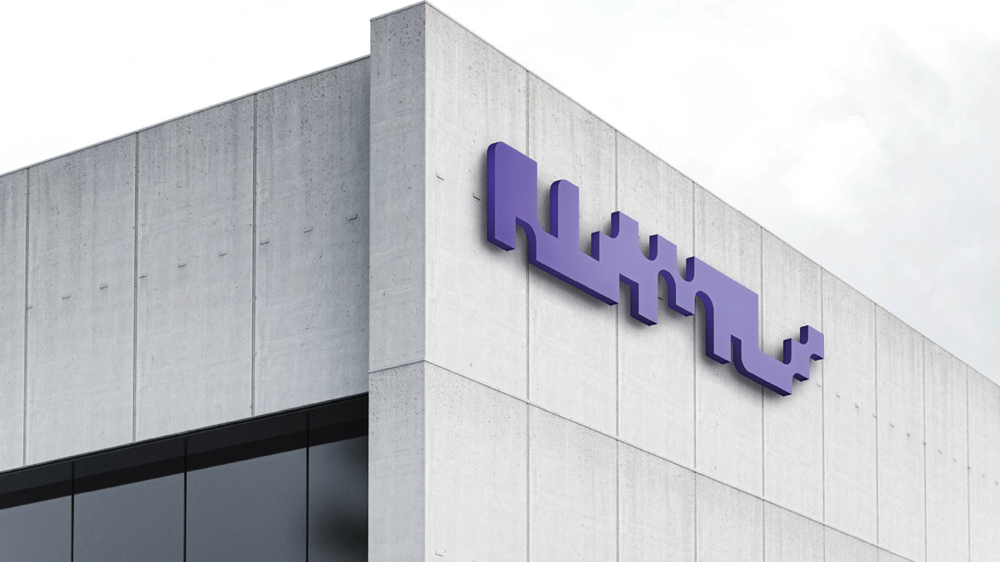
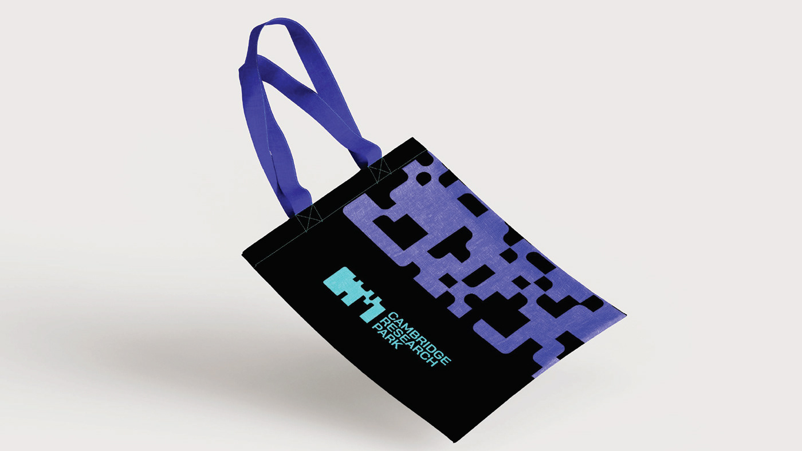
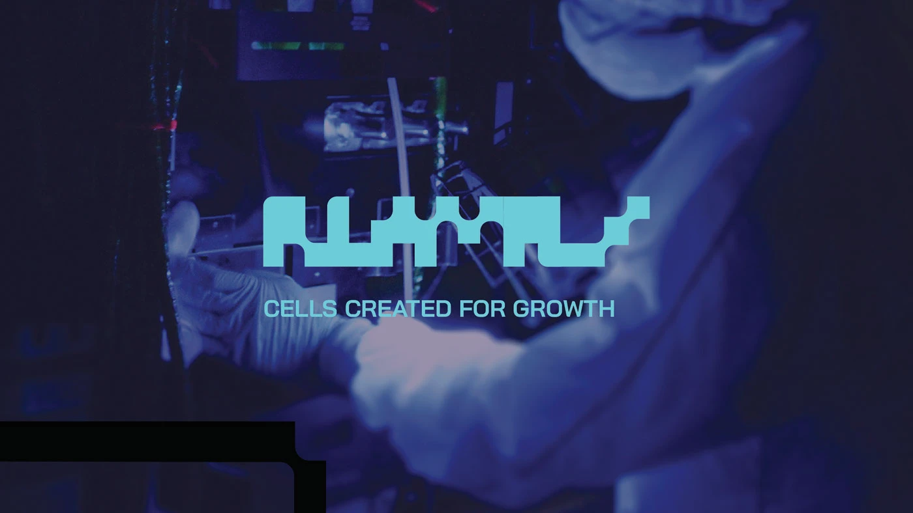
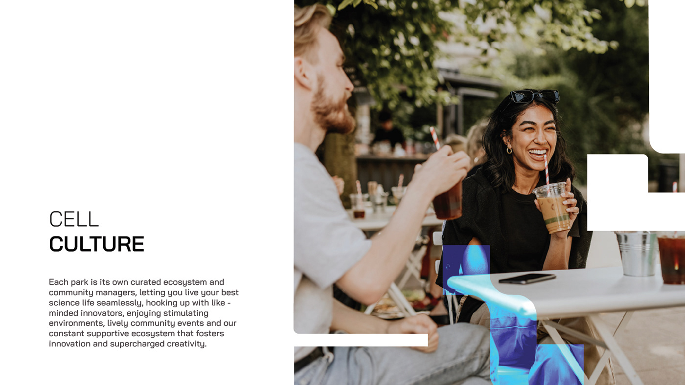
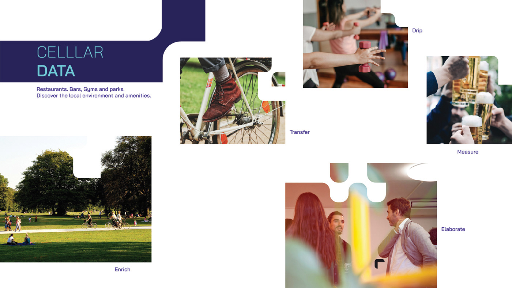